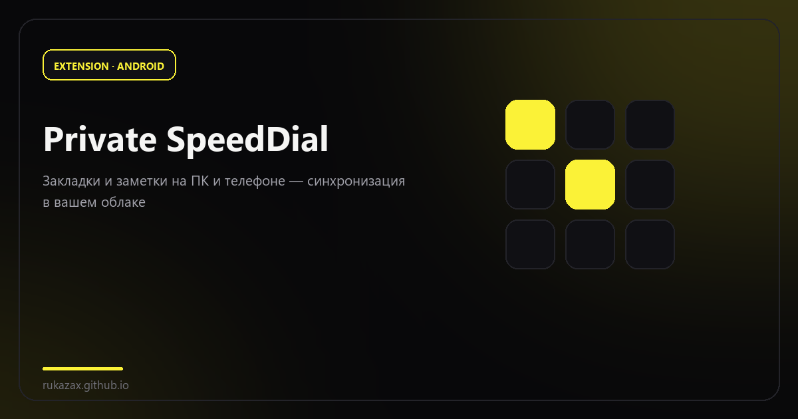
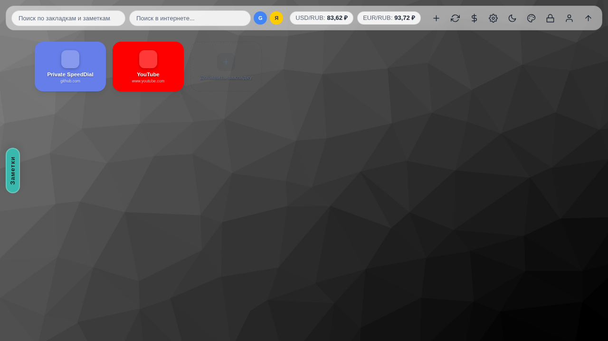
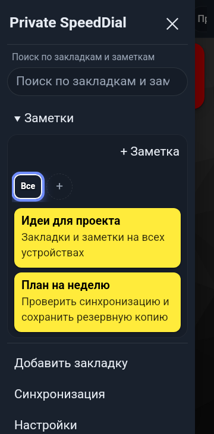

Private SpeedDial: закладки, которые принадлежат вам
Панель быстрого доступа с заметками, папками и синхронизацией в вашем облаке — расширение Chrome и приложение Android.
Обычные закладки живут внутри браузера: синхронизация идёт через аккаунт вендора, а на телефоне — отдельный, часто несовместимый список. Private SpeedDial решает это иначе: плитки быстрого доступа к сайтам, заметки и папки живут локально, а синхронизируются туда, куда вы сами укажете — в свой Nextcloud, WebDAV или поддерживаемое облако.
Это два приложения с общим форматом данных: расширение Chrome (Manifest V3) и приложение для Android. Интерфейс переведён на 13 языков, включая русский.

Что умеет
| Возможность | Расширение | Android |
|---|---|---|
| Закладки, вложенные папки, заметки | Да | Да |
| Профили, темы, цвета, фоны | Да | Да |
| Синхронизация | Ручная и автоматическая | Пока приложение открыто |
| Пароли отдельных папок | Да | Да |
| Импорт JSON / HTML / CSV / FVD | Да | Да |
| Поиск по закладкам и заметкам | Да | В меню ☰ |
На десктопе дополнительно есть курсы валют, интернет-поиск, мастер-пароль с автоблокировкой и режим «Не беспокоить». На телефоне этих функций нет намеренно: мобильная версия — про быстрый доступ, а не про рабочий стол.
| Android: главный экран | Android: меню и заметки |
|---|---|
 |
Как устроена синхронизация
Обязательного сервера у проекта нет — и это главное архитектурное решение.
flowchart LR
B[Расширение Chrome] --> BI[(IndexedDB)]
A[Android: WebView] --> N[Нативный мост Java]
N --> DB[(Приватная SQLite)]
B --> S[Движок синхронизации]
N --> S
S --> E{Ключ шифрования задан?}
E -- Да --> C[AES-GCM + PBKDF2]
E -- Нет --> J[Открытый JSON]
C --> P[Ваше облако / WebDAV]
J --> PФайл синхронизации называется private-speeddial.json. Реквизиты подключения и ключ шифрования в него не попадают — они остаются на устройстве. Поддерживаются три операции: объединение, загрузка на сервер и скачивание с сервера; есть учёт времени изменений и удалений, история и обработка первоначального конфликта.
Приватность без иллюзий
Авторы честно пишут то, что обычно опускают: приватность не означает отсутствие сети. Ваш облачный провайдер, сервис иконок, фоны по URL и GitHub видят метаданные соответствующих запросов. Локальная база не шифруется самим приложением, а пароль папки — это защита от случайного взгляда, а не от доступа к устройству. Полный разбор — в docs/SECURITY.md репозитория.
Зато нет центральной регистрации, нет аккаунта проекта и нет сервера, который хранит ваши закладки.
Импорт и переезд
Данные не заперты в формате приложения: импорт из JSON, HTML, CSV и FVD (формат Speed Dial из старых расширений), экспорт в JSON и HTML. Переезд с другого менеджера закладок — это несколько кликов, а не ручной перенос.
Связка с мобильным приложением
Расширение и Android-приложение — не два разных продукта, а две половины одного: общий формат данных, один файл синхронизации private-speeddial.json, одинаковые папки, заметки и профили. Добавили закладку на телефоне — она приезжает на компьютер при следующей синхронизации, и наоборот.
- Android 8.0+, APK ставится поверх старой версии, данные сохраняются.
- Синхронизация на телефоне работает, пока приложение открыто; на компьютере — по расписанию и вручную.
- Ключ шифрования задаёте вы: без него данные уходят обычным JSON, с ним — AES-256-GCM.
- Пароли папок и мастер-пароль есть в обеих версиях.
Ссылки: приложение для Android (APK) · расширение в Chrome Web Store · исходники и релизы · страница приложения с экранами.
Обновления
Расширение из Chrome Web Store обновляет сам браузер. Android-приложение раз в неделю (и не чаще) спрашивает GitHub Releases о новой версии и предлагает обновиться — установку всегда выполняет пользователь, автоматической установки кода нет. Кнопка «Пропустить релиз» запоминает конкретную версию на конкретном устройстве.
Установка
Расширение не заменяет новую вкладку автоматически и не пытается быть «умнее» браузера: это отдельная панель, которая открывается по клику или Ctrl+Shift+Y.
Кому подойдёт
Тем, у кого уже есть Nextcloud или WebDAV и кто не хочет отдавать список закладок третьей стороне. Тем, кто пользуется и браузером, и Android-телефоном и устал от двух несвязанных списков. И тем, кому важно, что проект можно почитать, собрать и проверить самостоятельно.